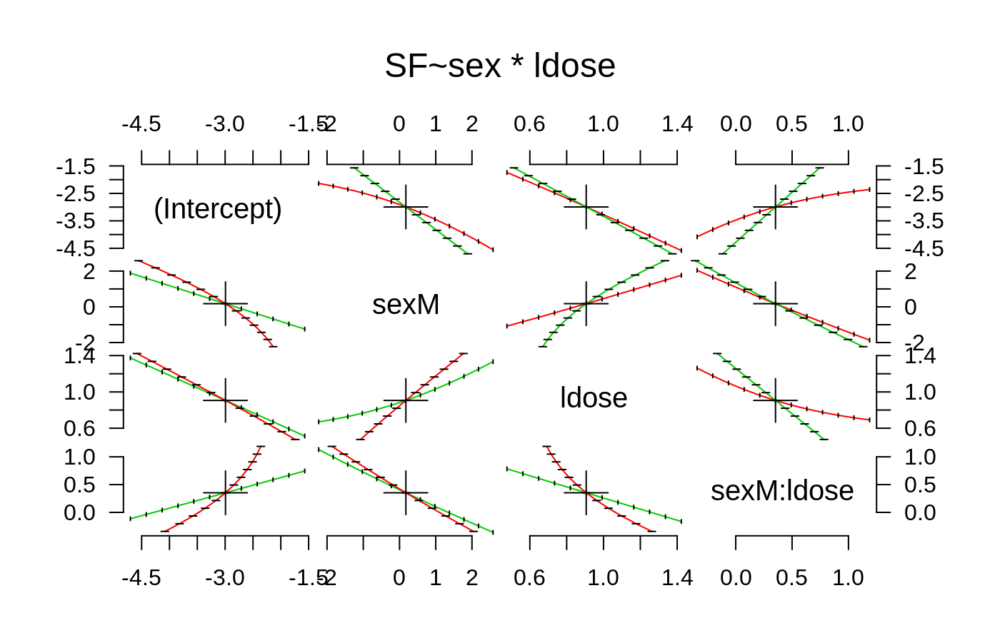

profile.glm.RdInvestigates the profile log-likelihood function for a fitted model of
class "glm".
# S3 method for glm profile(fitted, which = 1:p, alpha = 0.01, maxsteps = 10, del = zmax/5, trace = FALSE, ...)
| fitted | the original fitted model object. |
|---|---|
| which | the original model parameters which should be profiled. This can be a numeric or character vector. By default, all parameters are profiled. |
| alpha | highest significance level allowed for the profile t-statistics. |
| maxsteps | maximum number of points to be used for profiling each parameter. |
| del | suggested change on the scale of the profile t-statistics. Default value chosen to allow profiling at about 10 parameter values. |
| trace | logical: should the progress of profiling be reported? |
| ... | further arguments passed to or from other methods. |
A list of classes "profile.glm" and "profile" with an
element for each parameter being profiled. The elements are
data-frames with two variables
a matrix of parameter values for each fitted model.
the profile t-statistics.
The profile t-statistic is defined as the square root of change in sum-of-squares divided by residual standard error with an appropriate sign.
options(contrasts = c("contr.treatment", "contr.poly")) ldose <- rep(0:5, 2) numdead <- c(1, 4, 9, 13, 18, 20, 0, 2, 6, 10, 12, 16) sex <- factor(rep(c("M", "F"), c(6, 6))) SF <- cbind(numdead, numalive = 20 - numdead) budworm.lg <- glm(SF ~ sex*ldose, family = binomial) pr1 <- profile(budworm.lg) plot(pr1)pairs(pr1)